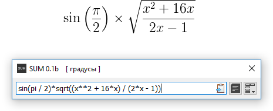

Название SUM не указывает на известную математическую функцию суммирования, а является лишь настоятельной просьбой - Stop Using Mouse! - в виде аббревиатуры (пер. «Перестаньте Пользоваться Мышью»).
SUM является достаточно простым, но в то же время интуитивным и довольно мощным «однострочным» кросс-платформенным калькулятором с Историей. SUM предоставляет простой и минималистичный Интерфейс для быстрого составления вычислительных выражений произвольной длины и сложности.
Средства вычисления основаны на интерпретаторе Python (для версии Python смотр. О программе в главном Меню).
Одно из ключевых свойств SUM - Быстрая клавиша вызова, активирующая (или переводящая на передний план) и закрывающая программу с помощью клавиатуры. Преимущества Быстрой клавиши вызова становятся более существенными, если на клавиатуре есть Цифровой блок. Для настройки Быстрой клавиши доступа смотр. Настройки.
Так как SUM использует однострочный синтаксис для вычислительных выражений - вложенность любых элементов, подвыражений и небуквенных математических символов, должна быть составлена с помощью скобок.
В примере ниже, символ «квадратного корня» переведен в функцию sqrt( ) (смотр. Список функций для всех функций), который получает вложенное выражение как аргумент. Переменная x в примере должна быть заранее назначена пользователем, в отличие от pi (π), которая является встроенной программной константой (смотр. Константы и переменные).
Сразу после завершения вычисления, оно автоматически добавляется в Историю (если не снимать отметку Добавить в Историю в Настройках), а результат, в свою очередь, копируется в буфер обмена (если не отключена опция Автокопирование результата).
Смотр. раздел Вычисления.

Перевод математического выражения в однострочный.
Наведите курсор для визуального подчеркивания перевода.
История по умолчанию закрыта, но может быть открыта с соответствующей кнопкой или клавишной комбинацией Ctrl-H. Смотр. Интерфейс для вида с Историей.
Клавиши (стрелки на клавиатуре) Вверх и Вниз перемещают по Истории назад и вперед, соответственно. Перемещение по Истории не доступно в режиме Редактирования (смотр. Интерфейс - «Поле Вычислений и История»), для предотвращения потери уже составленного выражения от случайного нажатия клавиши Вверх. История может быть удалены, как выборочно, так и очищена полностью с помощью соответствующей опции в Настройках.
Чтоб скопировать результат выражения, которое уже в Истории, не нужно делать новых вычислений. После остановки на нужном элементе, нажмите Ctrl-C для копирования выражения (если в Поле Вычисления есть выделение - будет скопирован выделенный фрагмент), и Ctrl-R для копирования результата. Смотр. все Клавишные комбинации.
Индикатор в квадратных скобках, после заголовка главного окна, показывает текущую единицу углов для тригонометрических функций. Возможны два варианта - градусы (по умолчанию) и радианы.
Для дополнительной информации выберите интересующий раздел из меню слева.